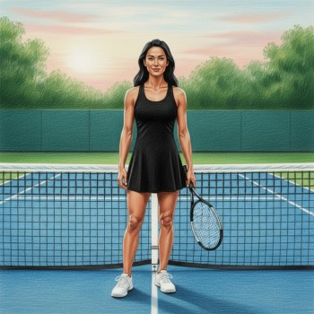

Девчонка у сетки
Tennis Girl
Дерзкая песня о миксте в большом теннисе. Девчонка у сетки — мишень или равный соперник? Драма, адреналин и удары по корту — настоящий теннисный боевик в музыке.
Tennis Girl — «Девчонка у сетки»
Тишина перед подачей и сердца стук.
Какой ты, парень, из «этих» или друг?
Короткий мяч... Сейчас узнаю! Вот чёрт, летит.
Едва закрывшись ракеткой, я не сдержала крик.
Обиды нет, мне жаль тебя.
Ты посмотри, кого с собою привела.
Глаза его горят и зубы сжаты.
И приближается твой час расплаты.
Девчонка у сетки — мишень или для красоты?
Какой же выбор сегодня сделал ты?
Я равная по силе? А может быть, слабей?
Я выдержу удар твой или всё-таки не бей?
Защитник мой идёт в атаку, он страшно зол.
Вот мяч летит — на смэш он подошел.
Звериный рык, прыжок, удар!!!
И у кого-то в мягких тканях разгорается пожар...
Два хищника на поле. Бой стал другим.
Адреналин нахлынул всем четверым.
Удар за ударом по телу и в корт.
И другом сегодня никто не уйдет.
Девчонка у сетки — мишень или для красоты?
Какой же выбор сегодня сделал ты?
Я равная по силе? А может быть, слабей?
Я выдержу удар твой или всё-таки не бей?
Или всё-таки не бей?
Или всё-таки не бей...